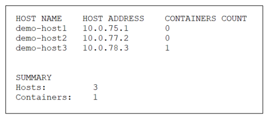
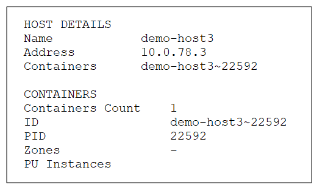
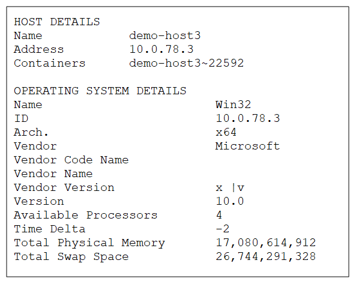
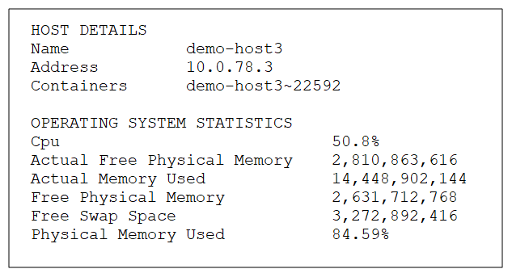

A host is discovered by having a Grid Service Agent running on it.
To view host information:
List all hosts
Command:
xap host list or insightedge host list
Description:
Lists all the host machines.
Input Example:
Output Example:

Parameters and Options:
None
List containers per host
Command:
xap host info --containers <name> or insightedge host info --containers <name>
Description:
Lists all the containers on a specific host machine.
Input Example:
Output Example:

Parameters and Options:
| Item | Name | Description |
|---|---|---|
| Parameter | name | Provide the name (or IP address) of the host for which you want to see the list of containers. |
List host operating system information
Command:
xap host info --os <name> or insightedge host info --os <name>
Description:
Lists all the operating system and related host machine details for a specific host machine, such as OS type, host architecture, OS version, etc.
Input Example:
Output Example:

Parameters and Options:
| Item | Name | Description |
|---|---|---|
| Parameter | name | Name (or IP address) of the host for which you want to see the operating system information. |
List host operating system statistics
Command:
xap host info --os-stats <name> or insightedge host info --os-stats <name>
Description:
Lists several operating system statistics for a specific host machine, such as free physical memory, memory used, and free swap space.
Input Example:
Output Example:

Parameters and Options:
| Item | Name | Description |
|---|---|---|
| Parameter | name | Name (or IP address) of the host for which you want to see the operating system statistics. |
List all hosts
Path
GET /hosts
Description:
This option lists the name, IP address, and containers for all the hosts in the service grid.
Example Request:
curl -X GET --header 'Accept: application/json' 'http://localhost:8090/v2/hosts'
Example Response:
[
{
"name": "admin",
"address": "172.20.3.93",
"containers": [
"admin~13972"
]
}
]
Options:
None.
View specific host
Path
GET /hosts{id}
Description:
This option lists the name, IP address, and containers for a specific host.
Example Request:
curl -X GET --header 'Accept: application/json' 'http://localhost:8090/v2/hosts/admin'
Example Response:
{
"name": "admin",
"address": "172.20.3.93",
"containers": [
"admin~13972"
]
}
Options:
| Option | Description | Required |
|---|---|---|
| host name | Provide the host name for which you want to see the general details. | Yes |
List containers per host
Path
GET /hosts{id}/containers
Description:
This option lists the Host ID, Process ID, zones, and Processing Unit instances for containers on a specific host.
Example Request:
curl -X GET --header 'Accept: application/json' 'http://localhost:8090/v2/hosts/admin/containers'
Example Response:
[
{
"id": "admin~13972",
"pid": 13972,
"zones": [],
"instances": [
"alertSpace~1",
"monitorSpace~1"
]
}
]
Options:
| Option | Description | Required |
|---|---|---|
| host name | Provide the host name for which you want to see the container information. | Yes |
List host operating system information
Path
GET /hosts{id}/details/os
Description:
This option lists the container information for a specific host.
Example Request:
curl -X GET --header 'Accept: application/json' 'http://localhost:8090/v2/hosts/admin/details/os'
Example Response:
{
"id": "172.20.3.93",
"name": "Win32",
"timeDelta": 0,
"currentTimeInMillis": 1521375407792,
"arch": "x64",
"version": "6.3",
"availableProcessors": 8,
"totalSwapSpaceSizeInBytes": 45535817728,
"totalPhysicalMemorySizeInBytes": 34261528576,
"hostName": "admin",
"hostAddress": "172.20.3.93",
"vendor": "Microsoft",
"vendorCodeName": "Vienna",
"vendorName": "Windows 7",
"vendorVersion": "7"
}
Options:
| Option | Description | Required |
|---|---|---|
| host name | Provide the host name for which you want to see the operating system information. | Yes |
List host operating system statistics
Path
GET /hosts{id}/statistcics/os
Description:
This option lists certain operating system statistics, such as free memory and used memory, for the specified host machine.
Example Request:
curl -X GET --header 'Accept: application/json' 'http://localhost:8090/v2/hosts/admin/statistics/os'
Example Response:
{
"timestamp": 1521375496115,
"adminTimestamp": 1521375496115,
"freeSwapSpaceSizeInBytes": 28697755648,
"freePhysicalMemorySizeInBytes": 19815034880,
"actualFreePhysicalMemorySizeInBytes": 20070580224,
"physicalMemoryUsedPerc": 42.165350748885395,
"cpuPerc": 0.06905130613591937,
"cpuPercFormatted": "6.9%",
"actualMemoryUsed": 14446493696
}
Options:
| Option | Description | Required |
|---|---|---|
| host name | Provide the host name for which you want to see the operating system statistics. | Yes |
The Hosts view provides a general overview of the host machines, Processing Units, and Spaces, and relevant containers..
Container information is explained in the Viewing Container Information topic.
| Item | Description |
|---|---|
| Host | |
| Name | Name of the host machine. |
| CPU | Indicator of how much CPU is being used, in %. |
| Memory Utiliz. (GB) | Indicator of how much of the host memory is being used, in both GB and %. |
| Grid Services | List of service grid components that are up and running (Grid Service Agent and containers). |
| Processing Units | List of Processing Units that are deployed on the host (with the number of running instances). |
| Primaries & Backups | Number of running Processing Unit instances according to primary and backup status. |
| Grid Service Agent | |
| Name | Name of the Grid Service Agent. |
| CPU | Indicator of how much CPU is being used, in %. |
| Used Heap (MB) | Indicator of how much heap memory the Grid Service Agent is utilizing, in both MB and %. |
| Threads | How many threads the Grid Service Agent has open. |
| Space | |
| Name | Name of the Space. |
| Type | Type of Space (stateful or stateless). |
| Space Instance | |
| Name | Name of the Space instance. For additional information about the Space instance, you can drill through to the Spaces view via the Actions menu. |
Additionally, you can view the following information from the Hosts tab in the Processing Units view:
| Item | Description |
|---|---|
| (status icon) | |
| OS | Icon that indicates which operating system is running on the host machine. |
| CPU | Indicator of how much CPU is being used, in %. |
| Memory (GB) | Indicator of how much of the host memory is being used, in both GB and %. |
| Core CPUs | Number of cores in the CPU. |
Refer to the GigaSpaces Management Center topics in the Administration section.
Refer to the Admin API topics in the Developer Guide.